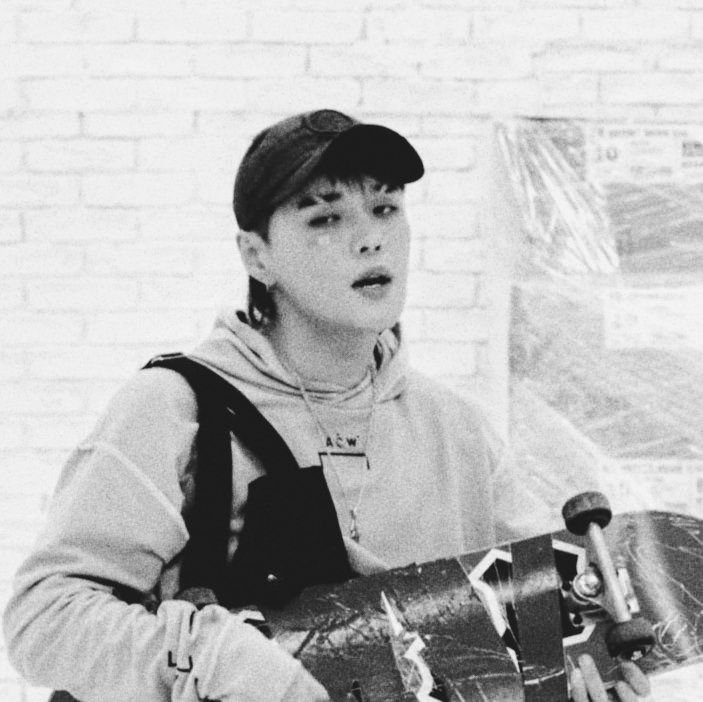

Dean

내일이 올 걸 아는데 난 핸드폰을 놓지 못해 잠은 올 생각이 없대 yeah 다시 Instagram, Instagram 하네 잘 난 사람 많고 많지 oh 누군 어디를 놀러 갔다지 좋아요는 안 눌렀어 나만 이런 것 같아서 저기 Instagram, Instagram 속엔 문제야 문제 온 세상 속에 똑같은 사랑노래가 와 닿지 못해 나의 밤 속엔 생각이 너무 많네 복잡해 틈 만나면 바뀌는 게 관둘래 이 놈의 정보화 시대 단단히 잘못 됐어 요즘은 아는게 더 괴로운 것 같은데 가면 갈 수록 너무 어려워 나만 이런 건지 클럽 말고 뭐 영화 말고 뭐 없나 하다 결국 동네 내 맘에는 구멍이 있어 그건 뭘로도 못 채우는 것 yeah 난 지금 가라앉는 중 인걸 네모난 바다 속에서 문제야 문제 온 세상 속에 똑같은 사랑 노래가 와 닿지 못해 나의 밤 속엔 생각이 너무 많네 뚜루루뚜 뚜루루뚜 뚜루루뚜 뚜루루뚜 all night 그렇게 시간 낭비를 하네 저 Instagram 속에서 Lonely, lonely, so lonely 원래 이리도 힘든가요 No way, no way 이 피드 속엔 나완 다른 세상 뿐인데 부질없이 올려 놓은 사진 뒤에 가려진 내 마음을 아는 이 없네 난 또 헤 메이네 저 Instagram 속에서 그래 너는 요즘 어때 잠 못 자는 건 여전해 자른 단발이 참 예쁘던데 좋아요는 안 눌렀어 조금 웃긴것 같아서 뚜루루뚜 뚜루루뚜 뚜루루뚜 뚜루루뚜 all night 그렇게 시간 낭비를 하네 니 Instagram 속에서 (뚜루루뚜 뚜루루뚜)소스: LyricFind
작사: Dae Hee Cho / Hansang Kim / Hyeok Kwon / Jusun Kim / Miso Kim / Wonsuk Lee